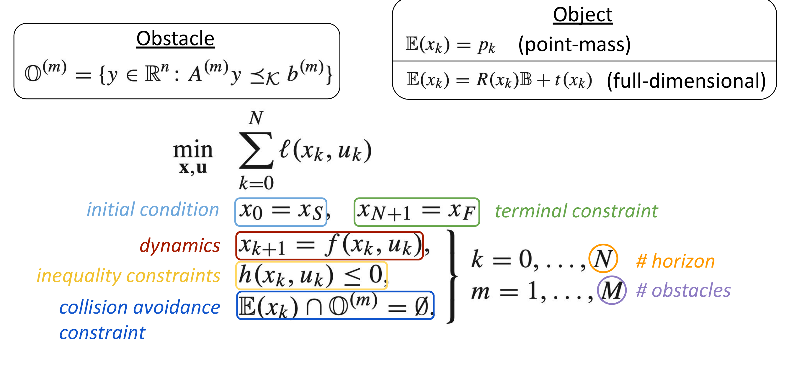
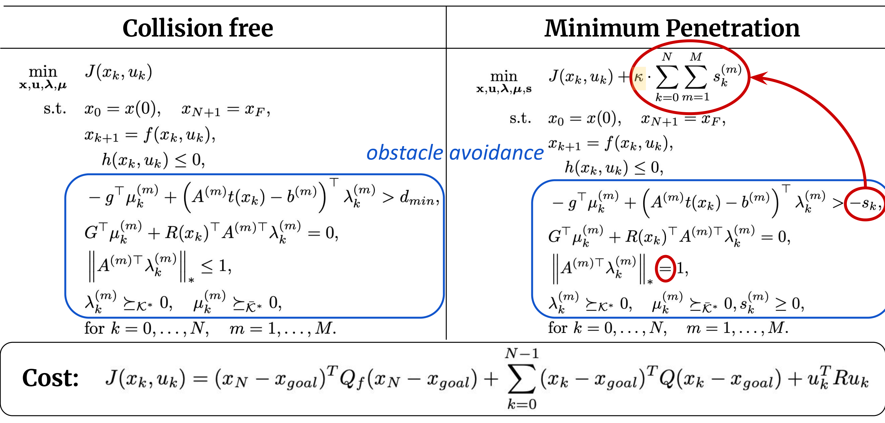
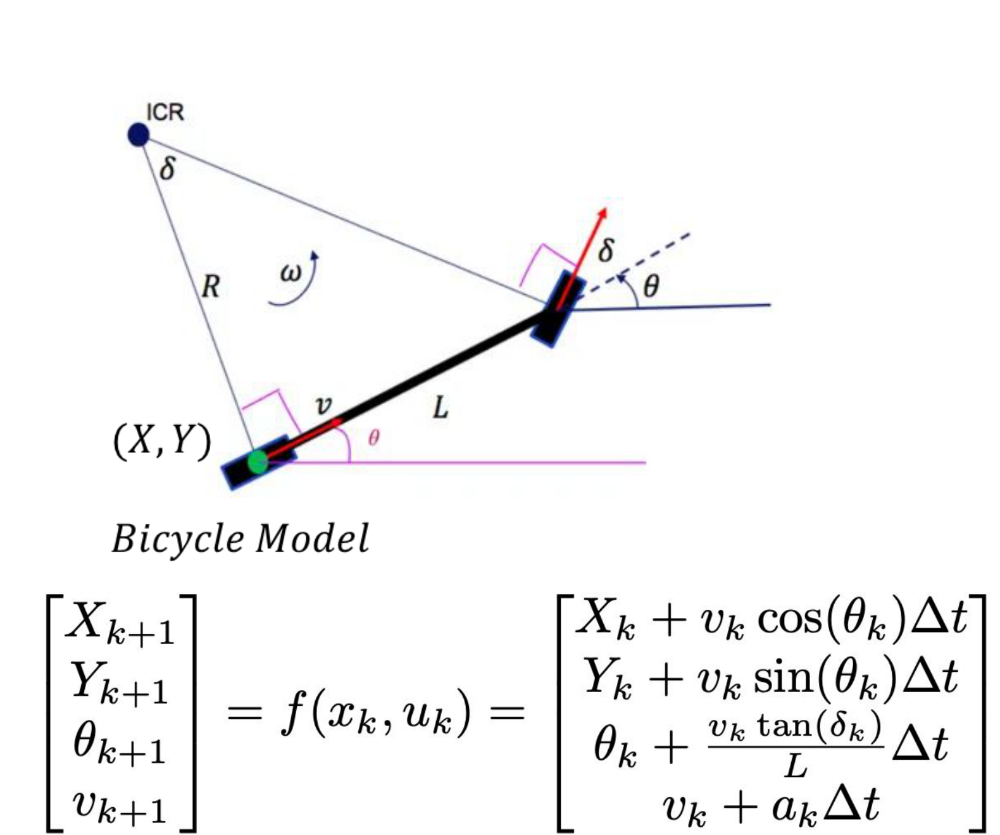
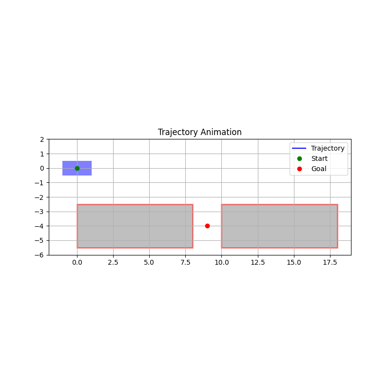
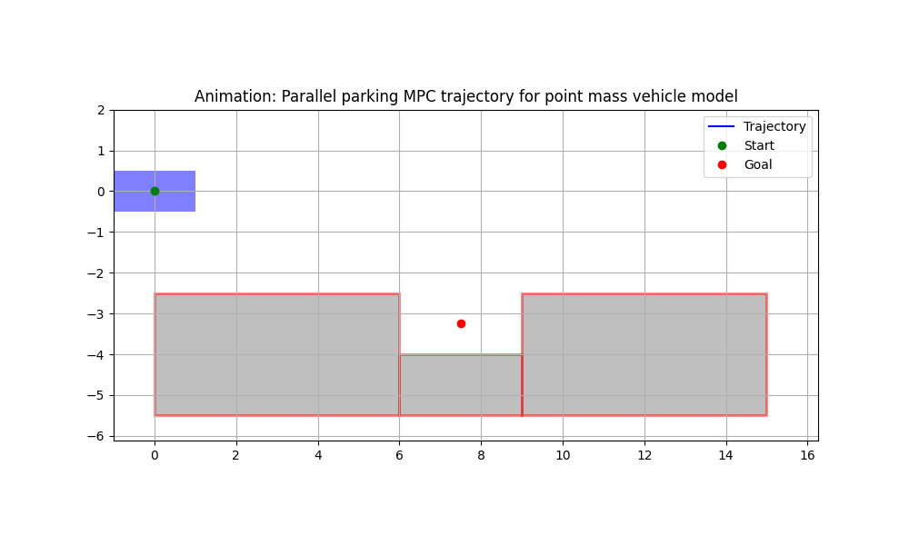
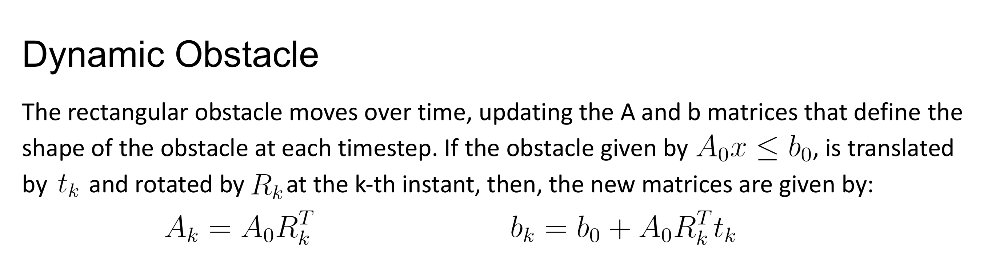
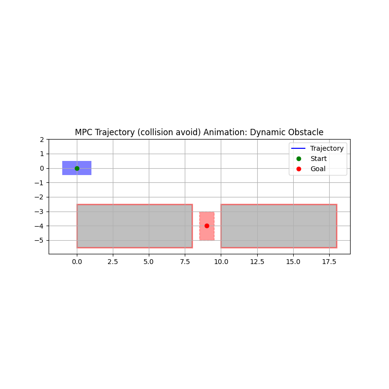
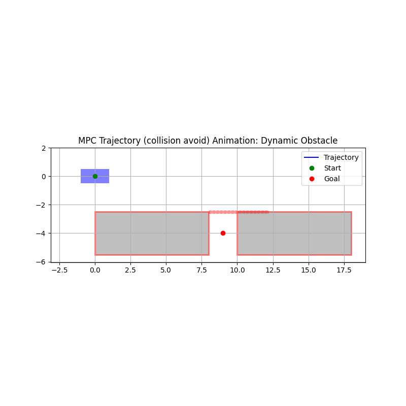

Optimization-Based Collision Avoidance
Ayush Agrawal, Debajyoti Chakrabarti, Radha Lahoti
Overview
Collision constraints are typically nonconvex and difficult to include directly in a trajectory optimizer. This project implements an optimization-based collision-avoidance formulation that uses convex duality to express the separation between a full-dimensional vehicle and convex obstacles as smooth nonlinear constraints.
We studied the formulation in both a one-shot optimal control problem (OCP) and a receding-horizon model predictive controller (MPC). The experiments cover reverse and parallel parking, strict collision avoidance, minimum-penetration trajectories, and moving obstacles.
Two Collision-Constraint Formulations
Geometry and finite-horizon control
Each convex obstacle is represented in half-space form. The controlled vehicle is a translated and rotated copy of a fixed base shape, so the optimizer reasons about the complete vehicle footprint rather than a point-mass approximation.
The nominal finite-horizon problem minimizes state and control cost subject to the initial and terminal states, vehicle dynamics, state/input bounds, and geometric separation:

Collision-free and minimum-penetration reformulations
Collision-free trajectories enforce a positive separation between the vehicle and every obstacle throughout the prediction horizon. The dual reformulation preserves the full rectangular vehicle geometry without introducing integer variables.
Minimum-penetration trajectories soften the separation constraint with a nonnegative slack variable and penalize that slack in the objective. This provides a least-intrusive solution when strict avoidance is infeasible in a tight environment.

| Formulation | Design parameter | Behavior |
|---|---|---|
| Collision-free | Minimum separation, dmin | Maintains a hard safety margin |
| Minimum penetration | Penetration weight, κ | Allows controlled overlap when necessary |
A larger penetration weight suppresses obstacle intrusion, but also makes the nonlinear program harder and slower to solve. We additionally penalized changes in acceleration and steering to produce smoother control profiles.
Autonomous Parking
The vehicle is modeled with nonlinear bicycle dynamics and its complete rectangular footprint is included in the optimization. One-shot OCP successfully reached exact terminal poses in both reverse- and parallel-parking scenarios.



Dynamic Obstacles
We extended the original static-obstacle formulation with time-varying polytope constraints. At every prediction step, the obstacle's half-space representation is updated from its prescribed translation and rotation.



Key Findings
- Minimum-penetration optimization was more robust in tight environments, at the cost of extra variables and computation time.
- One-shot OCP with an exact terminal constraint reliably reached the parking goal when a sufficiently long horizon was available.
- MPC improved goal tracking without a hard terminal constraint, but recursive feasibility was not guaranteed around moving obstacles.
- Dynamic-obstacle performance was highly sensitive to prediction horizon; neither a uniformly longer nor shorter horizon was always better.
- Small errors in the estimated obstacle state could destabilize MPC, motivating robust or stochastic extensions.
Key Takeaway
Smooth geometric constraints make it possible to optimize directly over the vehicle's full footprint, while a softened minimum-penetration variant provides a practical fallback for tight or temporarily blocked environments.